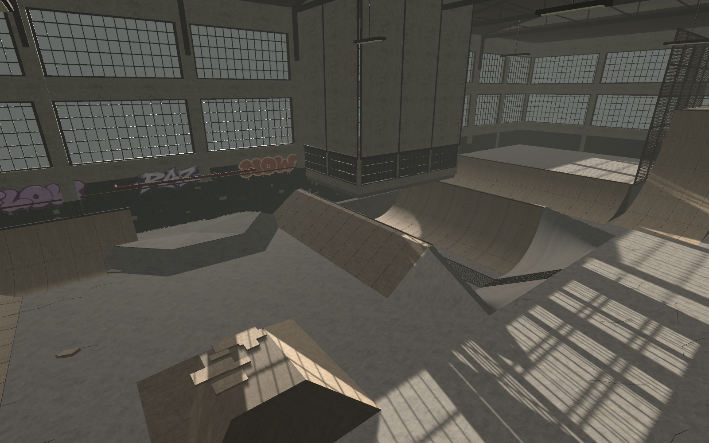
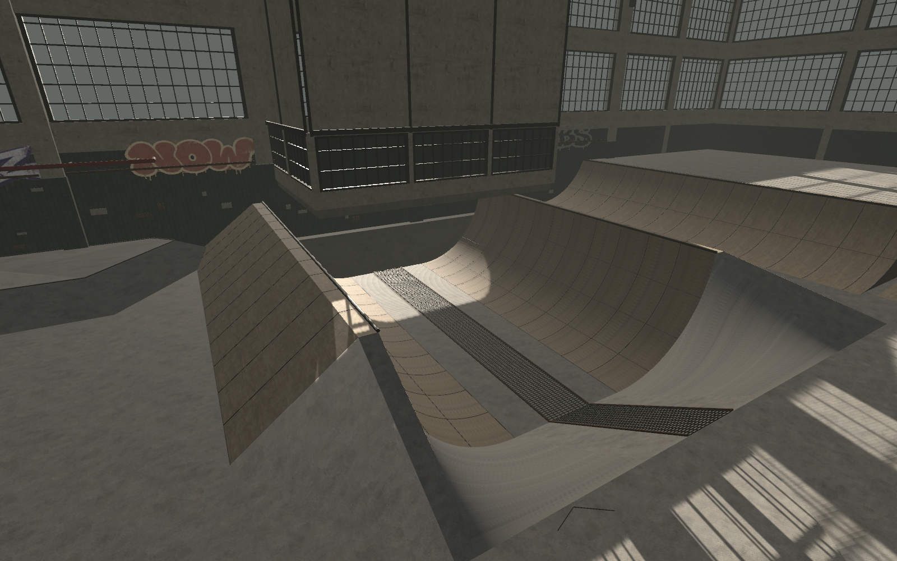
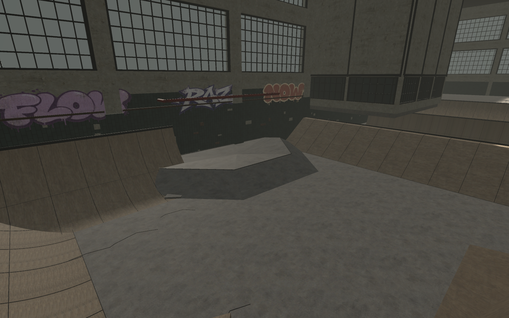
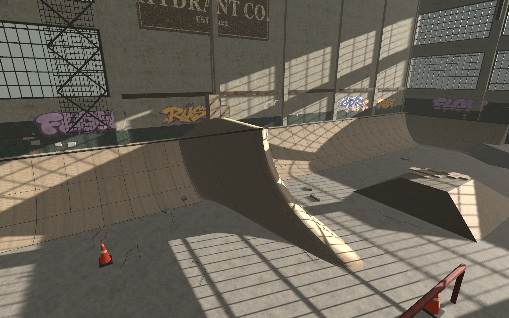
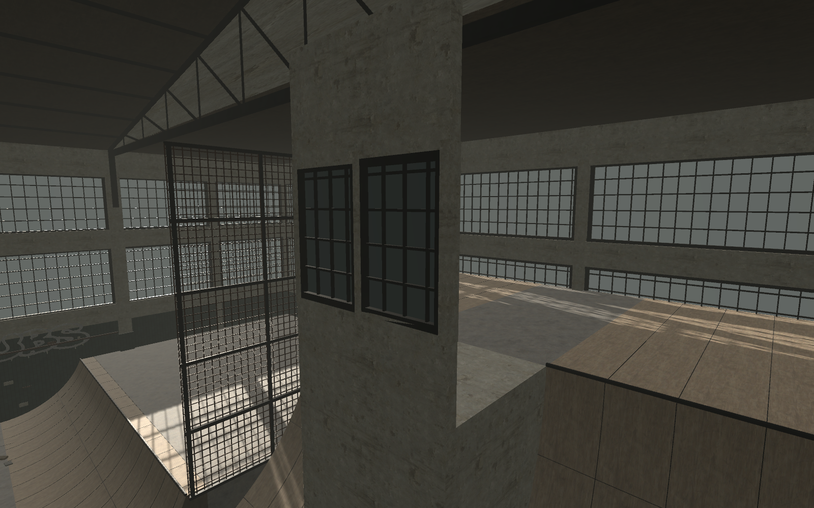
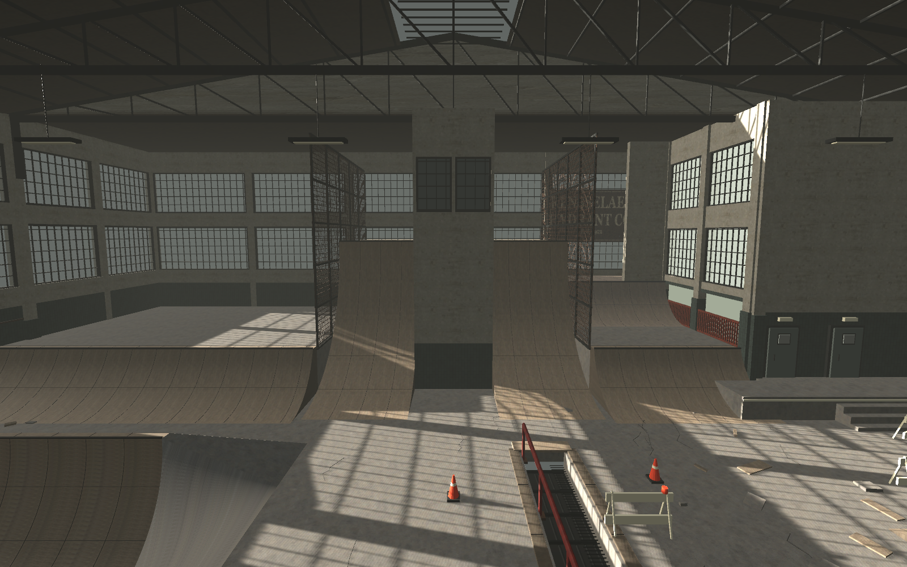
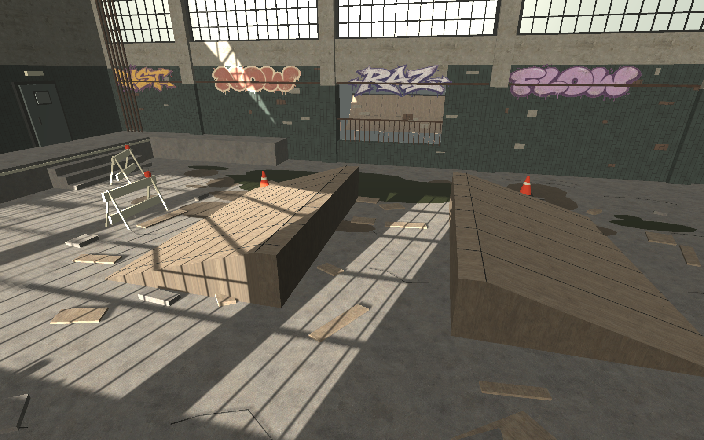

WAREHOUSE / MANUAL LAYOUT REPAIR / V11
以你手动摆好的位置为基准，修复接缝和装饰
先保存并备份了手动布局，再局部修复网格与碰撞。没有运行整场重建。原有 112 个对象的变换已逐一核对保留；窗墙形状、坡面接边等按本轮要求在局部网格中修改。新平台依据白色参考体的可见轮廓完成。
1 · 保留缩短后的布局，横向灰色直坡接入凹区



按你的确认，灰色直坡由大厅横向进入下凹区域，两端木质弧坡保留。排水格栅旋转到同一方向并沿直坡下降，进入凹区后接水平底板。原来那条跨木质弧坡、留在旧位置的纵向格栅已替换。
外坡的参考位置和坡顶高度保留，补齐到大厅地面，并让内弧坡与新坡顶相接。原凹坑位置多余的地面开口已补回。
2 · 白色参考形状 → 连续平台与一圈斜坡

读取三块相接参考体的轮廓，做成统一顶面和外围直坡；靠墙的一边接至墙面。原参考体仍保留，关闭显示与碰撞，避免白块与完成模型叠在一起。场外的独立参考体未改动。
3 · 保留中心凸起的新位置，圆顺连接两旁坡面

保留你移动后的中心和前端位置，平顺过渡肩部与曲面。两块复制的北侧坡原本互相重叠，现已裁接到相邻边界，避免叠面闪烁。旧木箱从原位置重新放到凸起顶面；旧位置的不可见木箱碰撞也清除了。
4 · 窗墙横向放到大柱外侧，两座高坡等大


两座高坡本体均宽 4.6 m、高 7.5 m，沿曲线逐点采样高度相同。外侧平台延续先前确认的一侧单层、一侧双层。窗墙后方仍能横向通行。
5 · 重新贴合移动后留下的装饰与结构

- 旧跳台支架关闭，替换为贴合两个当前跳台的支架，并挂在各自跳台下，后续移动会一起跟随。
- 清理新凹区中悬空的碎片与地面裂纹；旧东侧坡涂鸦重新贴到当前木坡。
- 门台后方与建筑之间补面；办公室保持你调整后的位置与尺寸，顶部补接屋顶。
- 你移动的杆子、小平台及其他布局变换保留。
保存、检查与回退
| 检查 | 结果 |
|---|---|
| 手动布局 | 保存后重开；112 个原有变换与手动基准记录一致。 |
| 坡面连接 | 366 处木坡／底板采样、264 处横向直坡／格栅支撑采样通过。 |
| 接缝与装饰 | 旧地板洞补齐；北侧过渡接边、平台外坡、涂鸦支撑和旧碰撞清理通过。 |
| 模型 | 79 个网格、109219 个三角形；顶点、法线、材质及保存依赖检查通过。 |
场景 Assets/Max/WarehouseRecreation.unity，预制体 WarehouseEnvironment.prefab。备份 Source~/BeforeManualRefinement~ 包含修复前保存的手动场景、依赖网格与材质；ManualPreviews 为修复前同机位渲染。
新增六个检查相机 34…39。旧版整场 Build 已加保护，避免误覆盖手动布局；本版检查入口为 WarehouseManualChecks.Run。
本轮完成的是手动布局后的模型连接与装饰修复。未重新配准整段视频、测试滑板／Leap Motion 操控或逐条路线实滑；材质和光照仍是重建近似。